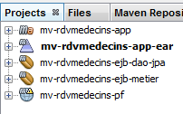
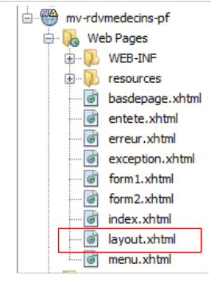
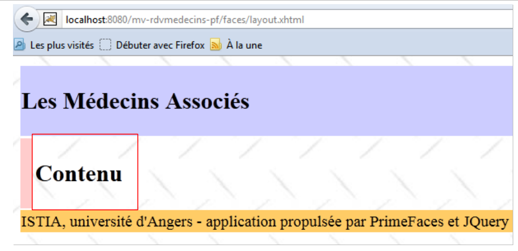
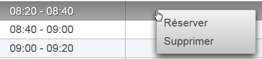
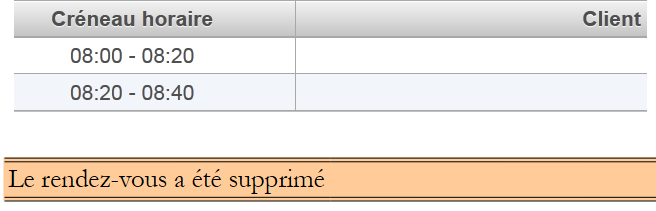
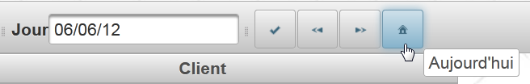
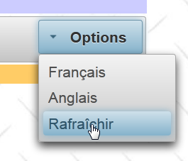

6. Example Application-03: rdvmedecins-pf-ejb
Let’s review the structure of the sample application developed for the GlassFish server:
 |
We are not changing anything about this architecture except for the web layer, which will be implemented here using JSF and PrimeFaces.
 |
6.1. The NetBeans project
Above, the [business] and [DAO] layers are those from Example 01 JSF / EJB / Glassfish. We are reusing them.
 |
- [mv-rdvmedecins-ejb-dao-jpa]: EJB project for the [DAO] and [JPA] layers from Example 01,
- [mv-rdvmedecins-ejb-metier]: EJB project for the [business] layer from Example 01,
- [mv-rdvmedecins-pf]: [web] layer project / Primefaces – new,
- [mv-rdvmedecins-app-ear]: enterprise project to deploy the application on the GlassFish server – new.
6.2. The enterprise project
The enterprise project is used solely for deploying the three modules [mv-rdvmedecins-ejb-dao-jpa], [mv-rdvmedecins-ejb-business], [mv-rdvmedecins-pf] on the GlassFish server. The NetBeans project is as follows:
 |
The project exists solely for these three dependencies [1] defined in the [pom.xml] file as follows:
<?xml version="1.0" encoding="UTF-8"?>
<project xmlns="http://maven.apache.org/POM/4.0.0" xmlns:xsi="http://www.w3.org/2001/XMLSchema-instance" xsi:schemaLocation="http://maven.apache.org/POM/4.0.0 http://maven.apache.org/xsd/maven-4.0.0.xsd">
<modelVersion>4.0.0</modelVersion>
<parent>
<artifactId>mv-rdvmedecins-app</artifactId>
<groupId>istia.st</groupId>
<version>1.0-SNAPSHOT</version>
</parent>
<groupId>istia.st</groupId>
<artifactId>mv-rdvmedecins-app-ear</artifactId>
<version>1.0-SNAPSHOT</version>
<packaging>ear</packaging>
<name>mv-rdvmedecins-app-ear</name>
...
<dependencies>
<dependency>
<groupId>${project.groupId}</groupId>
<artifactId>mv-rdvmedecins-ejb-dao-jpa</artifactId>
<version>${project.version}</version>
<type>ejb</type>
</dependency>
<dependency>
<groupId>${project.groupId}</groupId>
<artifactId>mv-rdvmedecins-ejb-metier</artifactId>
<version>${project.version}</version>
<type>ejb</type>
</dependency>
<dependency>
<groupId>${project.groupId}</groupId>
<artifactId>mv-rdvmedecins-pf</artifactId>
<version>${project.version}</version>
<type>war</type>
</dependency>
</dependencies>
</project>
- lines 10–13: the Maven artifact for the enterprise project,
- lines 18–37: the project’s three dependencies. Note their types (lines 23, 29, 35).
To run the web application, you must run this enterprise project.
6.3. The PrimeFaces web project
The Primefaces web project is as follows:
 |
- in [1], the project’s pages. The [index.xhtml] page is the project’s only page. It contains three fragments: [form1.xhtml], [form2.xhtml], and [error.xhtml]. The other pages are included solely for formatting purposes.
- in [2], the Java beans. The [Application] bean has application scope, and the [Form] bean has session scope. The [Error] class encapsulates an error. The [MyDataModel] class serves as a model for a PrimeFaces <dataTable> tag,
- in [3], the message files for internationalization,
- in [4], the dependencies. The web project depends on the EJB project for the [DAO] layer, the EJB project for the [business] layer, and PrimeFaces for the [web] layer.
6.4. Project configuration
The project configuration is the same as that of the PrimeFaces or JSF projects we have studied. We list the configuration files without re-explaining them.
 |  |
[web.xml]: configures the web application.
<?xml version="1.0" encoding="UTF-8"?>
<web-app version="3.0" xmlns="http://java.sun.com/xml/ns/javaee" xmlns:xsi="http://www.w3.org/2001/XMLSchema-instance" xsi:schemaLocation="http://java.sun.com/xml/ns/javaee http://java.sun.com/xml/ns/javaee/web-app_3_0.xsd">
<context-param>
<param-name>javax.faces.STATE_SAVING_METHOD</param-name>
<param-value>client</param-value>
</context-param>
<context-param>
<param-name>javax.faces.PROJECT_STAGE</param-name>
<param-value>Production</param-value>
</context-param>
<context-param>
<param-name>javax.faces.FACELETS_SKIP_COMMENTS</param-name>
<param-value>true</param-value>
</context-param>
<servlet>
<servlet-name>Faces Servlet</servlet-name>
<servlet-class>javax.faces.webapp.FacesServlet</servlet-class>
<load-on-startup>1</load-on-startup>
</servlet>
<servlet-mapping>
<servlet-name>Faces Servlet</servlet-name>
<url-pattern>/faces/*</url-pattern>
</servlet-mapping>
<session-config>
<session-timeout>
30
</session-timeout>
</session-config>
<welcome-file-list>
<welcome-file>faces/index.xhtml</welcome-file>
</welcome-file-list>
<error-page>
<error-code>500</error-code>
<location>/faces/exception.xhtml</location>
</error-page>
<error-page>
<exception-type>Exception</exception-type>
<location>/faces/exception.xhtml</location>
</error-page>
</web-app>
Note that on line 30, the [index.xhtml] page is the application's home page.
[faces-config.xml]: configures the JSF application
<?xml version='1.0' encoding='UTF-8'?>
<!-- =========== FULL CONFIGURATION FILE ================================== -->
<faces-config version="2.0"
xmlns="http://java.sun.com/xml/ns/javaee"
xmlns:xsi="http://www.w3.org/2001/XMLSchema-instance"
xsi:schemaLocation="http://java.sun.com/xml/ns/javaee http://java.sun.com/xml/ns/javaee/web-facesconfig_2_0.xsd">
<application>
<resource-bundle>
<base-name>
messages
</base-name>
<var>msg</var>
</resource-bundle>
<message-bundle>messages</message-bundle>
</application>
</faces-config>
[beans.xml]: empty but required for the @Named annotation
<?xml version="1.0" encoding="UTF-8"?>
<beans xmlns="http://java.sun.com/xml/ns/javaee"
xmlns:xsi="http://www.w3.org/2001/XMLSchema-instance"
xsi:schemaLocation="http://java.sun.com/xml/ns/javaee http://java.sun.com/xml/ns/javaee/beans_1_0.xsd">
</beans>
[styles.css]: the application's style sheet
.col1{
background-color: #ccccff
}
.col2{
background-color: #ffcccc
}
The PrimeFaces library comes with its own style sheets. The style sheet above is used only for the page to be displayed in the event of an exception—a page not managed by the application. The [exception.xhtml] page is then displayed.
[messages_fr.properties]: the French message file
# layout
layout.entete=Les Médecins Associés
layout.footer=ISTIA, University of Angers - application powered by PrimeFaces and jQuery
# exception
exception.header=The following exception occurred
exception.httpCode=HTTP error code
exception.message=Exception message
exception.requestUri=URL requested when the error occurred
exception.servletName=Name of the servlet requested when the error occurred
# form 1
form1.title=Reservations
form1.doctor=Doctor
form1.day=Day
form1.options=Options
form1.french=French
form1.english=English
form1.refresh=Refresh
form1.previous=Previous day
form1.next=Next day
form1.agenda=Displays the schedule of the selected doctor for the selected day
form1.today=Today
# Form 2
form2.title=Schedule for {0} {1} {2} on {3}
form2.title_detail=Schedule for {0} {1} {2} on {3}
form2.timeSlot=Time slot
form2.client=Client
form2.home=Home
form2.delete=Delete
form2.reserve=Reserve
form2.confirm=Confirm
form2.cancel=Cancel
form2.error=Error
form2.emptyMessage=No records found in the database
form2.delete.confirmation=Are you sure?
form2.delete.message=Deleting an appointment
form2.delete.yes=Yes
form2.delete.no=No
form2.client_error=Unknown client [{0}]
form2.client_error_detail=Unknown client {0}
form2.actionError=Unauthorized action
form2.action_error_detail=Unauthorized action
# error
error.title=An error has occurred.
error.exceptions=List of exceptions
error.type=Exception type
error.message=Associated message
error.home=Home
[messages_en.properties]: the English message file
# layout
layout.header=Associated Doctors
layout.footer=ISTIA, Angers University - Application powered by PrimeFaces and jQuery
# exception
exception.header=The following exceptions occurred
exception.httpCode=HTTP error code
exception.message=Exception message
exception.requestUri=URL targeted when the error occurred
exception.servletName=Name of the servlet targeted when the error occurred
# Form 1
form1.title=Reservations
form1.doctor=Doctor
form1.date=Date
form1.options=Options
form1.French=French
form1.english=English
form1.refresh=Refresh
form1.previous=Previous Day
form1.next=Next day
form1.agenda=Show the doctor's schedule for the selected doctor and the selected day
form1.today = Today
# Form 2
form2.title={0} {1} {2}'' diary on {3}
form2.title_detail={0} {1} {2}'' diary on {3}
form2.timeSlot=Time Period
form2.client=Client
form2.homepage=Welcome Page
form2.delete=Delete
form2.book=Book
form2.submit=Submit
form2.cancel=Cancel
form2.error=Error
form2.emptyMessage=No time periods in the database
form2.delete.confirmation=Are you sure?
form2.delete.message=Booking deletion
form2.delete.yes=Yes
form2.delete.no=No
form2.clientError=Unknown Client {0}
form2.client_error_detail=Unknown Client [{0}]
form2.action_error=Unauthorized action
form2.action_error_detail=Unauthorized action
# error
error.title=The following exceptions occurred
error.exceptions=Exception chain
error.type=Exception type
error.message=Associated Message
error.home=Welcome
6.5. The page template [layout.xhtml]
 |
The [layout.xhtml] template is as follows:
<?xml version='1.0' encoding='UTF-8' ?>
<!DOCTYPE html PUBLIC "-//W3C//DTD XHTML 1.0 Transitional//EN" "http://www.w3.org/TR/xhtml1/DTD/xhtml1-transitional.dtd">
<html xmlns="http://www.w3.org/1999/xhtml"
xmlns:h="http://java.sun.com/jsf/html"
xmlns:p="http://primefaces.org/ui"
xmlns:f="http://java.sun.com/jsf/core"
xmlns:ui="http://java.sun.com/jsf/facelets">
<f:view locale="#{form.locale}">
<h:head>
<title>JSF</title>
<h:outputStylesheet library="css" name="styles.css"/>
</h:head>
<h:body style="background-image: url('#{request.contextPath}/resources/images/standard.jpg');">
<h:form id="form">
<table style="width: 1200px">
<tr>
<td colspan="2" bgcolor="#ccccff">
<ui:include src="header.xhtml"/>
</td>
</tr>
<tr>
<td style="width: 10px;" bgcolor="#ffcccc">
<ui:include src="menu.xhtml"/>
</td>
<td>
<p:outputPanel id="content">
<ui:insert name="content">
<h2>Content</h2>
</ui:insert>
</p:outputPanel>
</td>
</tr>
<tr bgcolor="#ffcc66">
<td colspan="2">
<ui:include src="footer.xhtml"/>
</td>
</tr>
</table>
</h:form>
</h:body>
</f:view>
</html>
The only variable part of this template is the area on lines 28–30. This area is located in the :form:content ID (line 27). Keep this in mind. AJAX calls that update this area will have the attribute update=":form:content". Furthermore, the form begins on line 15. Therefore, the fragment inserted on lines 28–30 is inserted into this form.
This template produces the following output:
 |
The dynamic part of the page will be inserted into the boxed area above.
6.6. The [index.xhtml] page
 |
The project always displays the same page, the following [index.xhtml] page:
<?xml version='1.0' encoding='UTF-8' ?>
<!DOCTYPE html PUBLIC "-//W3C//DTD XHTML 1.0 Transitional//EN" "http://www.w3.org/TR/xhtml1/DTD/xhtml1-transitional.dtd">
<html xmlns="http://www.w3.org/1999/xhtml"
xmlns:h="http://java.sun.com/jsf/html"
xmlns:p="http://primefaces.org/ui"
xmlns:f="http://java.sun.com/jsf/core"
xmlns:ui="http://java.sun.com/jsf/facelets">
<ui:composition template="layout.xhtml">
<ui:define name="content">
<ui:fragment rendered="#{form.form1Rendered}">
<ui:include src="form1.xhtml"/>
</ui:fragment>
<ui:fragment rendered="#{form.form2Rendered}">
<ui:include src="form2.xhtml"/>
</ui:fragment>
<ui:fragment rendered="#{form.errorRendered}">
<ui:include src="error.xhtml"/>
</ui:fragment>
</ui:define>
</ui:composition>
</html>
- lines 8-9: this XHTML fragment will be inserted into the dynamic area of the [layout.xhtml] template,
- the page consists of three sub-fragments:
- [form1.xhtml], lines 10–12;
- [form2.xhtml], lines 13–15;
- [error.xhtml], lines 16–18.
The presence of these fragments in [index.xhtml] is controlled by Booleans in the [Form.java] template associated with the page. Therefore, by adjusting these Booleans, the rendered page changes.
The [form1.xhtml] fragment renders as follows:
 |
The [form2.xhtml] fragment renders as follows:
 |
The [erreur.xhtml] fragment renders as follows:
 |
6.7. The project’s beans
 |
The class in the [utils] package has already been introduced: the [Messages] class facilitates the internationalization of an application’s messages. It was discussed in Section 2.8.5.7.
6.7.1. The Application bean
The [Application.java] bean is an application-scoped bean. Recall that this type of bean is used to store read-only data available to all users of the application. This bean is as follows:
package beans;
import javax.ejb.EJB;
import javax.enterprise.context.ApplicationScoped;
import javax.inject.Named;
import rdvmedecins.metier.service.IMetierLocal;
@Named(value = "application")
@ApplicationScoped
public class Application {
// business layer
@EJB
private ILocalBusinessLogic businessLogic;
public Application() {
}
// getters
public IMetierLocal getMetier() {
return job;
}
}
- line 8: we give the bean the name "application",
- line 9: it has application scope,
- lines 13–14: a reference to the local interface of the [business] layer will be injected into it by the application server’s EJB container. Let’s review the application architecture:
 |
The JSF application and the [Business] EJB will run in the same JVM (Java Virtual Machine). Therefore, the [JSF] layer will use the EJB’s local interface. That’s all. The [Application] bean contains nothing else. To access the [Business] layer, the other beans will retrieve it from this bean.
6.7.2. The [Error] bean
The [Error] class is as follows:
- package beans;
public class Error {
public Error() {
}
// field
private String class;
private String message;
// constructor
public Error(String class, String message){
this.setClass(class);
this.message = message;
}
// getters and setters
...
}
- line 9: the name of an exception class if an exception was thrown,
- line 10: an error message.
6.7.3. The [Form] bean
Its code is as follows:
package beans;
import java.io.IOException;
...
@Named(value = "form")
@SessionScoped
public class Form implements Serializable {
public Form() {
}
// Application bean
@Inject
private Application application;
// session cache
private List<Doctor> doctors;
private List<Client> clients;
private Map<Long, Doctor> hDoctors = new HashMap<Long, Doctor>();
private Map<Long, Client> hClients = new HashMap<Long, Client>();
private Map<String, Client> hClientIdentities = new HashMap<String, Client>();
// model
private Long doctorId;
private Date day = new Date();
private Boolean form1Rendered = true;
private Boolean form2Rendered = false;
private Boolean errorRendered = false;
private String form2Title;
private DoctorScheduleDay doctorScheduleDay;
private Long selectedTimeSlotId;
private Doctor doctor;
private Long clientId;
private DailyDoctorSlot selectedSlot;
private List<Error> errors;
private Boolean error = false;
private String clientIdentity;
private String action;
private String clientErrorMessage;
private Boolean clientError;
private String actionErrorMessage;
private Boolean actionError;
private String locale = "fr";
@PostConstruct
private void init() {
// cache doctors and clients
try {
doctors = application.getBusiness.getAllDoctors();
clients = application.getBusiness.getAllClients();
} catch (Throwable th) {
// log the error
prepareErrorView(th);
return;
}
// the dictionaries
for (Doctor m : doctors) {
hDoctors.put(m.getId(), m);
}
for (Client c : clients) {
hClients.put(c.getId(), c);
hClientIdentities.put(identity(c), c);
}
}
...
// display view
private void setForms(Boolean form1Rendered, Boolean form2Rendered, Boolean errorRendered) {
this.form1Rendered = form1Rendered;
this.form2Rendered = form2Rendered;
this.errorRendered = errorRendered;
}
// prepare error view
private void prepareErrorView(Throwable th) {
// create the list of errors
errors = new ArrayList<Error>();
errors.add(new Error(th.getClass().getName(), th.getMessage()));
while (th.getCause() != null) {
th = th.getCause();
errors.add(new Error(th.getClass().getName(), th.getMessage()));
}
// the error view is displayed
setForms(true, false, true);
}
// getters and setters
...
}
- lines 6-8: the [Form] class is a bean named "form" with session scope. Note that the class must therefore be serializable,
- lines 14–15: the form bean has a reference to the application bean. This reference will be injected by the servlet container in which the application runs (presence of the @Inject annotation).
- lines 17–44: the page templates [form1.xhtml, form2.xhtml, error.xhtml]. The display of these pages is controlled by the booleans in lines 27–29. Note that by default, the [form1.xhtml] page is rendered (line 27),
- lines 46–47: The `init` method is executed immediately after the class is instantiated (due to the presence of the `@PostConstruct` annotation),
- lines 50-51: the [business] layer is queried for the list of doctors and clients,
- lines 59–65: if everything went well, the doctors’ and clients’ dictionaries are constructed. They are indexed by their number. Next, the [form1.xhtml] page will be displayed (line 27),
- line 54: in case of an error, the [error.xhtml] page template is constructed. This template is the list of errors from line 36,
- lines 78–88: the [prepareVueErreur] method builds the list of errors to display. The [index.xhtml] page then displays the [form1.xhtml] and [erreur.xhtml] fragments (line 87).
The [error.xhtml] page is as follows:
<?xml version='1.0' encoding='UTF-8' ?>
<!DOCTYPE html PUBLIC "-//W3C//DTD XHTML 1.0 Transitional//EN" "http://www.w3.org/TR/xhtml1/DTD/xhtml1-transitional.dtd">
<html xmlns="http://www.w3.org/1999/xhtml"
xmlns:h="http://java.sun.com/jsf/html"
xmlns:p="http://primefaces.org/ui"
xmlns:f="http://java.sun.com/jsf/core"
xmlns:ui="http://java.sun.com/jsf/facelets">
<body>
<p:panel header="#{msg['error.title']}" closable="true" >
<hr/>
<p:dataTable value="#{form.errors}" var="error">
<f:facet name="header">
<h:outputText value="#{msg['error.exceptions']}"/>
</f:facet>
<p:column>
<f:facet name="header">
<h:outputText value="#{msg['error.type']}"/>
</f:facet>
<h:outputText value="#{error.class}"/>
</p:column>
<p:column>
<f:facet name="header">
<h:outputText value="#{msg['error.message']}"/>
</f:facet>
<h:outputText value="#{error.message}"/>
</p:column>
</p:dataTable>
</p:panel>
</body>
</html>
It uses a <p:dataTable> tag (lines 12–28) to display the list of errors. This results in an error page similar to the following:
 |
We will now define the different phases of the application's lifecycle. For each user action, we will examine the relevant views and event handlers.
6.8. Displaying the home page
If all goes well, the first page displayed is [form1.xhtml]. This results in the following view:
 |
The [form1.xhtml] page is as follows:
<?xml version='1.0' encoding='UTF-8' ?>
<!DOCTYPE html PUBLIC "-//W3C//DTD XHTML 1.0 Transitional//EN" "http://www.w3.org/TR/xhtml1/DTD/xhtml1-transitional.dtd">
<html xmlns="http://www.w3.org/1999/xhtml"
xmlns:h="http://java.sun.com/jsf/html"
xmlns:p="http://primefaces.org/ui"
xmlns:f="http://java.sun.com/jsf/core"
xmlns:ui="http://java.sun.com/jsf/facelets">
<p:toolbar>
<p:toolbarGroup align="left">
...
</p:toolbarGroup>
<p:toolbarGroup align="right">
...
</p:toolbarGroup>
</p:toolbar>
</html>
The toolbar highlighted in the screenshot is the PrimeFaces Toolbar component. It is defined in lines 8–14. It contains two groups of components, each defined by a <toolbarGroup> tag, in lines 9–11 and 12–14. One of the groups is aligned to the left of the toolbar (line 9), the other to the right (line 12).
Let’s examine some components in the left group:
<p:toolbar>
<p:toolbarGroup align="left">
<h:outputText value="#{msg['form1.medecin']}"/>
<p:selectOneMenu value="#{form.idMedecin}" effect="fade">
<f:selectItems value="#{form.doctors}" var="doctor" itemLabel="#{doctor.title} #{doctor.firstName} #{doctor.lastName}" itemValue="#{doctor.id}"/>
<p:ajax update=":form:content" listener="#{form.hideAgenda}" />
</p:selectOneMenu>
<p:separator/>
<h:outputText value="#{msg['form1.day']}"/>
<p:calendar id="calendar" value="#{form.day}" readOnlyInputText="true">
<p:ajax event="dateSelect" listener="#{form.hideAgenda}" update=":form:content"/>
</p:calendar>
<p:separator/>
<p:commandButton id="book-calendar" icon="ui-icon-check" actionListener="#{form.getCalendar}" update=":form:content"/>
<p:tooltip for="resa-agenda" value="#{msg['form1.agenda']}"/>
...
</p:toolbarGroup>
...
- lines 4-7: the doctors dropdown to which an effect has been added (effect="fade"),
- line 6: an AJAX behavior. When there is a change in the dropdown, the [Form].hideAgenda method (listener="#{form.hideAgenda}") will be executed and the dynamic area :form:content (update=":form:content") will be updated,
- line 8: includes a separator in the toolbar,
- lines 10–12: the date input field. The PrimeFaces calendar is used here. The input field is read-only (readOnlyInputText="true"),
- line 11: an AJAX behavior. When the date changes, the [Form].hideAgenda method will be executed and the dynamic field :form:content updated,
- line 14: a button. Clicking it triggers an AJAX call to the [Form].getAgenda() method; the model will then be modified, and the server response will be used to update the dynamic :form:content field,
- line 15: the <tooltip> tag allows you to associate a tooltip with a component. The component’s ID is specified by the tooltip’s for attribute. Here (for="resa-agenda") refers to the button on line 14:
 |  |
This page is powered by the following template:
@Named(value = "form")
@SessionScoped
public class Form implements Serializable {
public Form() {
}
// session cache
private List<Doctor> doctors;
private List<Client> clients;
// model
private Long doctorId;
private Date day = new Date();
// list of doctors
public List<Doctor> getDoctors() {
return doctors;
}
// list of clients
public List<Client> getClients() {
return clients;
}
// calendar
public void getCalendar() {
...
}
- The field on line 12 reads from and writes to the value of the list on line 4 of the page. When the page first loads, it sets the value selected in the combo box. On initial load, idMedecin is equal to null, so the first doctor will be selected.
- the method in lines 16–18 generates the items for the doctors dropdown (line 5 of the page). Each generated option will have as its label (itemLabel) the doctor’s title, last name, and first name, and as its value (itemValue), the doctor’s ID,
- the field on line 13 provides read/write access to the input field on line 10 of the page. Upon initial display, the current date is shown,
- Lines 26–28: The getAgenda method handles the click on the [Agenda] button on line 14 of the page. It is almost identical to what it was in the JSF version:
// Application bean
@Inject
private Application application;
// session cache
private List<Doctor> doctors;
private Map<Long, Doctor> doctors = new HashMap<Long, Doctor>();
// model
private Long doctorId;
private Date day = new Date();
private Boolean form1Rendered = true;
private Boolean form2Rendered = false;
private Boolean errorRendered = false;
private DoctorScheduleDay agendaDoctorScheduleDay;
private Long selectedAppointmentID;
private DoctorSlotSelected;
private List<Error> errors;
private Boolean error = false;
public void getAgenda() {
try {
// retrieve the doctor
doctor = hDoctors.get(doctorId);
// the doctor's schedule for a given day
doctorScheduleForDay = application.getBusinessLogic().getDoctorScheduleForDay(doctor, day);
// display form 2
setForms(true, true, false);
} catch (Throwable th) {
// error view
prepareErrorView(th);
}
// no slot selected yet
selectedTimeSlot = null;
}
We will not comment on this code. That has already been done.
6.9. Display a doctor's schedule
6.9.1. Overview of the schedule
Here is the following use case:
 |
- In [1], you select a doctor [1] and a day [2], then request [3] the doctor’s schedule for the selected day;
- in [4], it appears below the toolbar.
The code for the page [form2.xhtml] is as follows:
<?xml version='1.0' encoding='UTF-8' ?>
<!DOCTYPE html PUBLIC "-//W3C//DTD XHTML 1.0 Transitional//EN" "http://www.w3.org/TR/xhtml1/DTD/xhtml1-transitional.dtd">
<html xmlns="http://www.w3.org/1999/xhtml"
xmlns:h="http://java.sun.com/jsf/html"
xmlns:p="http://primefaces.org/ui"
xmlns:f="http://java.sun.com/jsf/core"
xmlns:ui="http://java.sun.com/jsf/facelets"
xmlns:c="http://java.sun.com/jsp/jstl/core">
<body>
<!-- context menu -->
<p:contextMenu for="agenda">
...
</p:contextMenu>
<!-- calendar -->
<p:dataTable id="agenda" value="#{form.myDataModel}" var="doctorSlotDay" style="width: 800px"
selectionMode="single" selection="#{form.creneauChoisi}" emptyMessage="#{msg['form2.emtyMessage']}">
<!-- schedule column -->
<p:column style="width: 100px">
...
</p:column>
<!-- customer column -->
<p:column style="width: 300px">
...
</p:column>
</p:dataTable>
<!-- appointment deletion confirmation -->
<p:confirmDialog id="confirmDialog" message="#{msg['form2.deletion.confirmation']}"
header="#{msg['form2.deletion.message']}" severity="alert" widgetVar="confirmation">
...
</p:confirmDialog>
<!-- error message -->
<p:dialog header="#{msg['form2.error']}" widgetVar="dlgError" height="100" >
...
</p:dialog>
<!-- server response handling -->
<script type="text/javascript">
...
}
</script>
</body>
</html>
- lines 16-26: the main element of the page is the <dataTable> that displays the doctor's schedule,
 |
- lines 12-14: we will use a context menu to add/delete an appointment:
 |
- lines 29-32: A confirmation dialog will be displayed when the user wants to delete an appointment:
 |
- lines 35-37: a dialog box will be used to report an error:
 |
- lines 40–43: we will need to add some JavaScript.
6.9.2. The Appointment Table
Here we’ll cover the data table model as discussed in Section 5.15, page 327.
Let’s examine the main element of the page, the table that displays the calendar:
<p:dataTable id="agenda" value="#{form.myDataModel}" var="creneauMedecinJour" style="width: 800px"
selectionMode="single" selection="#{form.creneauChoisi}" emptyMessage="#{msg['form2.emtyMessage']}">
<!-- schedule column -->
<p:column style="width: 100px">
...
</p:column>
<!-- customer column -->
<p:column style="width: 300px">
...
</p:column>
</p:dataTable>
The result is as follows:
 |
This is a two-column table (rows 4–6 and 8–10) populated by the source [Form].getMyDataModel() (value="#{form.myDataModel}"). Only one row can be selected at a time (selectionMode="single"). With each POST, a reference to the selected item is assigned to [Form].creneauChoisi (selection="#{form.creneauChoisi}").
Recall that the getAgenda method initialized the following field in the model:
// model
private AgendaMedecinJour agendaMedecinJour;
The table model is obtained by calling the following [Form].getMyDataModel method (value attribute of the <dataTable> tag):
// the dataTable model
public MyDataModel getMyDataModel() {
return new MyDataModel(agendaMedecinJour.getCreneauxMedecinJour());
}
Let’s examine the [MyDataModel] class, which serves as the model for the <p:dataTable> tag:
package beans;
import javax.faces.model.ArrayDataModel;
import org.primefaces.model.SelectableDataModel;
import rdvmedecins.business.entities.DoctorAppointment;
public class MyDataModel extends ArrayDataModel<CreneauMedecinJour> implements SelectableDataModel<CreneauMedecinJour> {
// constructors
public MyDataModel() {
}
public MyDataModel(CreneauMedecinJour[] doctorAppointments) {
super(doctorAppointments);
}
@Override
public Object getRowKey(DoctorAppointmentTime slot) {
return doctorAppointment.getAppointment().getId();
}
@Override
public DoctorSlot getRowData(String rowKey) {
// list of slots
DaytimeDoctorSlot[] daytimeDoctorSlots = (DaytimeDoctorSlot[]) getWrappedData();
// the key is a long integer
long key = Long.parseLong(rowKey);
// search for the selected slot
for (DaytimeDoctorSlot daytimeDoctorSlot : daytimeDoctorSlots) {
if (daytimeDoctorSlot.getSlot().getId().longValue() == key) {
return dayDoctorSlot;
}
}
// nothing
return null;
}
}
- line 7: the [MyDataModel] class is the model for the <p:dataTable> tag. The purpose of this class is to link the rowkey element that is posted with the element associated with that row,
- Line 7: The class implements the [SelectableDataModel] interface through the [ArrayDataModel] class. This means that the constructor parameter is an array. This array populates the <dataTable> tag. Here, each row of the array will be associated with an element of type [CreneauMedecinJour],
- Lines 13–15: The constructor passes its parameter to its parent class,
- lines 18–20: Each row of the array corresponds to a time slot and will be identified by the time slot’s ID (line 19). It is this ID that will be posted to the server,
- line 23: the code that will be executed on the server side when a time slot ID is posted. The purpose of this method is to return the reference to the [CreneauMedecinJour] object associated with this ID. This reference will be assigned to the target of the selection attribute of the <dataTable> tag:
<p:dataTable id="agenda" value="#{form.myDataModel}" var="creneauMedecinJour" style="width: 800px"
selectionMode="single" selection="#{form.creneauChoisi}" emptyMessage="#{msg['form2.emtyMessage']}">
The [Form].creneauChoisi field will therefore contain the reference of the [CreneauMedecinJour] object that you want to add or delete.
6.9.3. The time slot column
 |
The time slot column is generated using the following code:
<p:dataTable id="agenda" value="#{form.myDataModel}" var="creneauMedecinJour" style="width: 800px"
selectionMode="single" selection="#{form.creneauChoisi}" emptyMessage="#{msg['form2.emtyMessage']}">
<!-- time slot column -->
<p:column style="width: 100px">
<f:facet name="header">
<h:outputText value="#{msg['form2.timeSlot']}"/>
</f:facet>
<div align="center">
<h:outputFormat value="{0,number,#00}:{1,number,#00} - {2,number,#00}:{3,number,#00}">
<f:param value="#{creneauMedecinJour.creneau.hdebut}" />
<f:param value="#{dayDoctorSlot.slot.startTime}" />
<f:param value="#{dayDoctorSlot.slot.endTime}" />
<f:param value="#{dayDoctorSlot.slot.endTime}" />
</h:outputFormat>
</div>
</p:column>
<!-- client column -->
<p:column style="width: 300px">
...
</p:column>
</p:dataTable>
- lines 5-7: the column header,
- lines 8–15: the current column element. Note line 9, where the <h:outputFormat> tag is used to format the elements to be displayed. The value parameter specifies the string to be displayed. The notation {i,type,format} refers to parameter number i, the type of that parameter, and its format. Here, there are 4 parameters numbered from 0 to 3; their type is numeric, and they will be displayed with two digits,
- Lines 10–13: the four parameters expected by the <h:outputFormat> tag.
6.9.4. The customer column
 |
The customer column is generated using the following code:
<!-- agenda -->
<p:dataTable id="agenda" value="#{form.myDataModel}" var="creneauMedecinJour" style="width: 800px"
selectionMode="single" selection="#{form.creneauChoisi}" emptyMessage="#{msg['form2.emtyMessage']}">
<!-- schedule column -->
...
<!-- client column -->
<p:column style="width: 300px">
<f:facet name="header">
<h:outputText value="#{msg['form2.client']}"/>
</f:facet>
<ui:fragment rendered="#{daytimeDoctorAppointment.rv!=null}">
<h:outputText value="#{creneauMedecinJour.rv.client.title} #{creneauMedecinJour.rv.client.firstName} #{creneauMedecinJour.rv.client.lastName}" />
</ui:fragment>
<ui:fragment rendered="#{daytimeAppointment.rv==null and form.selectedAppointment!=null and form.selectedAppointment.appointment.id==daytimeAppointment.appointment.id}">
...
</ui:fragment>
</p:column>
</p:dataTable>
- lines 8–10: the column header,
- lines 11–13: the current element when there is an appointment for the time slot. In this case, we display the title, first name, and last name of the client for whom this appointment was made,
- lines 14–16: another fragment that we will return to later.
6.10. Deleting an appointment
Deleting an appointment involves the following sequence:
 |
 |
The view involved in this action is as follows:
<!-- context menu -->
<p:contextMenu for="agenda">
...
<p:menuitem value="#{msg['form2.delete']}" onclick="confirmation.show()"/>
</p:contextMenu>
<!-- calendar -->
<p:dataTable id="agenda" value="#{form.myDataModel}" var="creneauMedecinJour" style="width: 800px"
selectionMode="single" selection="#{form.creneauChoisi}" emptyMessage="#{msg['form2.emtyMessage']}">
...
</p:dataTable>
<!-- Appointment deletion confirmation -->
<p:confirmDialog id="confirmDialog" message="#{msg['form2.suppression.confirmation']}"
header="#{msg['form2.deletion.message']}" severity="alert" widgetVar="confirmation">
<p:commandButton value="#{msg['form2.delete.yes']}" update=":form:content" action="#{form.action}"
oncomplete="handleRequest(xhr, status, args); confirmation.hide()">
<f:setPropertyActionListener value="delete" target="#{form.action}"/>
</p:commandButton>
<p:commandButton value="#{msg['form2.delete.no']}" onclick="confirmation.hide()" type="button" />
</p:confirmDialog>
- Lines 2-5: A context menu linked to the data array (for attribute). It has two options [1]:
 |
- line 4: the [Delete] option triggers the display of the [2] dialog box from lines 13-20,
- line 15: clicking [Yes] triggers the execution of [Form.action], which will delete the appointment. Normally, the context menu should not offer the [Delete] option if the selected item has no appointment, and not the [Book] option if the selected item has an appointment. We were unable to make the context menu that subtle. It works for the first selected item, but then we noticed that the context menu retains the configuration set for that first selection. It then becomes incorrect. So we kept both options and decided to provide feedback to the user if they deleted an item without an appointment,
- Line 16: The `oncomplete` attribute, which allows you to define JavaScript code to be executed after the AJAX request is completed. In this case, the code will be as follows:
<!-- error message -->
<p:dialog header="#{msg['form2.error']}" widgetVar="dlgError" height="100" >
<h:outputText value="#{form.msgErreur}" />
</p:dialog>
<!-- server response handling -->
<script type="text/javascript">
function handleRequest(xhr, status, args) {
// error?
if(args.error) {
errorDlg.show();
}
}
</script>
- Line 10: The JavaScript code checks whether the args dictionary has an error attribute. If so, it displays the dialog box from line 2 (widgetVar attribute). This dialog box displays the [Form].msgError template.
Let's look at the code executed to handle the deletion of an appointment:
<p:confirmDialog ...>
<p:commandButton value="#{msg['form2.delete.yes']}" update=":form:content" action="#{form.action}"
...>
<f:setPropertyActionListener value="delete" target="#{form.action}"/>
</p:commandButton>
...
</p:confirmDialog>
- Line 2: The [Form].action method will be executed,
- line 4: before it is executed, the action field will have been set to 'delete'.
The [action] method is as follows:
// action on RV
public void action() {
// depending on the desired action
if (action.equals("delete")) {
delete();
}
...
}
public void delete() {
// Do we need to do anything?
Rv rv = selectedSlot.getRv();
if (rv == null) {
reportIncorrectAction();
return;
}
try {
// Delete an appointment
application.getBusinessLogic().deleteAppointment(appointment);
// update the calendar
doctorDailyCalendar = application.getBusinessLogic().getDoctorDailyCalendar(doctor, day);
// display form2
setForms(true, true, false);
} catch (Throwable th) {
// error view
prepareErrorView(th);
}
// reset the selected time slot
selectedSlot = null;
}
- line 4: if the action is 'delete', execute the [delete] method,
- line 12: retrieve the appointment for the selected slot. Recall that [selectedSlot] was initialized with the reference to the selected [DoctorSlot] element;
- if this appointment exists, it is deleted (line 19), the calendar is refreshed (line 21) and then re-displayed (line 23),
- if the deletion failed, the error page is displayed (line 26),
- if the selected element has no appointment (line 13), then we are in a situation where the user clicked [Delete] on a slot that has no appointment. We report this error:
 |
The [reportIncorrectAction] method is as follows:
// report an incorrect action
private void reportIncorrectAction() {
// reset selected slot
selectedTimeSlot = null;
// error
errorMessage = Messages.getMessage(null, "form2.actionError", null).getSummary();
RequestContext.getCurrentInstance().addCallbackParam("error", true);
}
- line 4: remove the selection,
- line 6: generate an internationalized error message,
- line 7: add the attribute ('error', true) to the args dictionary of the AJAX call.
Let's return to the XHTML code for the [Yes] button:
<p:commandButton value="#{msg['form2.delete.yes']}" update=":form:content" action="#{form.action}"
oncomplete="handleRequest(xhr, status, args); confirmation.hide()">
- Line 2: After the [Form].action method is executed, the JavaScript handleRequest method is executed:
<!-- error message -->
<p:dialog header="#{msg['form2.error']}" widgetVar="dlgError" height="100" >
<h:outputText value="#{form.errorMessage}" />
</p:dialog>
<!-- server response handling -->
<script type="text/javascript">
function handleRequest(xhr, status, args) {
// error?
if(args.error) {
errorDlg.show();
}
}
</script>
- Line 10: We check if the args dictionary has an attribute named 'error'. If so, the dialog box from line 2 is displayed.
- line 3: it displays the error message generated by the template.
6.11. Making an appointment
Making an appointment corresponds to the following sequence:
 |
The view involved in this action is as follows:
<!-- context menu -->
<p:contextMenu for="agenda">
<p:menuitem value="#{msg['form2.reserver']}" update=":form:content" action="#{form.action}" oncomplete="handleRequest(xhr, status, args)">
<f:setPropertyActionListener value="reserve" target="#{form.action}"/>
</p:menuitem>
...
</p:contextMenu>
<!-- calendar -->
<p:dataTable id="agenda" value="#{form.myDataModel}" var="creneauMedecinJour" style="width: 800px"
selectionMode="single" selection="#{form.creneauChoisi}" emptyMessage="#{msg['form2.emtyMessage']}">
<!-- schedule column -->
<p:column style="width: 100px">
...
</p:column>
<!-- customer column -->
<p:column style="width: 300px">
<f:facet name="header">
<h:outputText value="#{msg['form2.client']}"/>
</f:facet>
...
<ui:fragment rendered="#{creneauMedecinJour.rv==null and form.creneauChoisi!=null and form.creneauChoisi.creneau.id==creneauMedecinJour.creneau.id}">
<p:autoComplete completeMethod="#{form.completeClients}" value="#{form.identiteClient}" size="30"/>
<p:spacer width="50px"/>
<p:commandLink action="#{form.action()}" value="#{msg['form2.submit']}" update=":form:content" oncomplete="handleRequest(xhr, status, args)">
<f:setPropertyActionListener value="submit" target="#{form.action}"/>
</p:commandLink>
<p:spacer width="50px"/>
<p:commandLink action="#{form.action()}" value="#{msg['form2.cancel']}" update=":form:content">
<f:setPropertyActionListener value="cancel" target="#{form.action}"/>
</p:commandLink>
</ui:fragment>
</p:column>
</p:dataTable>
...
- lines 21–31: display the following:
 |
- line 21: this is displayed if there are no appointments, a selection has been made, and the ID of the selected time slot matches that of the current table row. If this condition is not included, the fragment is displayed for all time slots,
- line 22: the input field will be an assisted input field. We assume here that there may be many clients,
- Lines 24–26: the [Submit] link,
- lines 28–30: the [Cancel] link.
The auto-complete field is generated by the following code:
<p:autoComplete completeMethod="#{form.completeClients}" value="#{form.identiteClient}" size="30"/>
The [Form].completeClients method is responsible for providing suggestions to the user based on the characters typed in the input field:
 |
The suggestions are in the format [Last name, first name, title]. The code for the [Form].completeClients method is as follows:
// the autocomplete text method
public List<String> completeClients(String query) {
List<String> identities = new ArrayList<String>();
// search for matching clients
for (Client c : clients) {
String identity = identity(c);
if (identity.toLowerCase().startsWith(query.toLowerCase())) {
identities.add(identity);
}
}
return identities;
}
private String identity(Client c) {
return c.getLastName() + " " + c.getFirstName() + " " + c.getTitle();
}
- Line 2: query is the string entered by the user,
- line 3: the list of suggestions. Initially an empty list,
- lines 5–10: we construct the clients’ full names [Last name, First name, Title]. If a full name starts with query (line 7), it is added to the list of suggestions (line 8).
6.12. Confirming an appointment
Confirming an appointment follows this sequence:
 |  |
The code for the [Validate] link is as follows:
<p:commandLink action="#{form.action()}" value="#{msg['form2.valider']}" update=":formulaire:contenu" oncomplete="handleRequest(xhr, status, args)">
<f:setPropertyActionListener value="valider" target="#{form.action}"/>
</p:commandLink>
So the [Form].action() method will handle this event. Meanwhile, the [Form].action model will have received the string 'submit'. The code is as follows:
// Application bean
@Inject
private Application application;
// session cache
...
private Map<String, Client> hClientIdentities = new HashMap<String, Client>();
// model
private Date day = new Date();
private Boolean form1Rendered = true;
private Boolean form2Rendered = false;
private Boolean errorRendered = false;
private DoctorScheduleDay doctorScheduleDay;
private DoctorSlotDay selectedSlot;
private List<Error> errors;
private Boolean error = false;
private String customerID;
private String action;
private String errorMessage;
@PostConstruct
private void init() {
...
for (Client c : clients) {
hClients.put(c.getId(), c);
hClientIdentities.put(identity(c), c);
}
}
// action on RV
public void action() {
// depending on the desired action
...
if (action.equals("validate")) {
validateReservation();
}
}
// validate reservation
public void validateReservation() {
// validate the reservation
try {
// Does the customer exist?
Boolean error = !hCustomerIdentities.containsKey(customerIdentity);
if (error) {
errorMessage = Messages.getMessage(null, "form2.customerError", new Object[]{customerID}).getSummary();
RequestContext.getCurrentInstance().addCallbackParam("error", true);
return;
}
// add the appointment
application.getBusinessLogic().addAppointment(day, selectedTimeSlot.getTimeSlot(), clientIdentities.get(clientIdentity));
// update the calendar
doctorDayCalendar = application.getBusinessLogic().getDoctorDayCalendar(doctor, day);
// display form2
setForms(true, true, false);
} catch (Throwable th) {
// error view
prepareErrorView(th);
}
// reset the selected time slot
selectedSlot = null;
// reset client
clientIdentity = null;
}
- lines 33-35: because of the value of the action field, the [validateReservation] method will be executed,
- Line 43: We first check that the customer exists. This is because, in the assisted input field, the user may have entered data manually without using the suggestions provided. The assisted input is associated with the [Form].identiteClient model. We therefore check whether this identity exists in the identitesClients dictionary created when the model was instantiated (line 20). This dictionary associates a client identity of type [Last name, First name, Title] with the client itself (line 25),
- line 44: if the customer does not exist, an error is returned to the browser,
- line 45: an internationalized error message,
- line 46: we add the attribute ('error', true) to the args dictionary of the AJAX call. The AJAX call has been defined as follows:
<p:commandLink action="#{form.action()}" value="#{msg['form2.valider']}" update=":formulaire:contenu" oncomplete="handleRequest(xhr, status, args)">
<f:setPropertyActionListener value="valider" target="#{form.action}"/>
</p:commandLink>
In line 3 above, we see that the [Validate] link has an oncomplete attribute. It is this attribute that will display the error message using a technique we have already encountered.
- Line 50: We ask the [business] layer to add an appointment for the selected day (day), the selected time slot (creneauChoisi.getCreneau()), and the selected client (hIdentitesClients.get(identiteClient)),
- line 52: we ask the [business] layer to refresh the doctor’s calendar. We will see the added appointment along with any changes other users of the application may have made,
- line 54: the calendar [form2.xhtml] is re-displayed,
- line 57: the error page is displayed if an error occurs.
6.13. Canceling an appointment
This corresponds to the following sequence:
 |
The [Cancel] button on the [form2.xhtml] page is as follows:
<p:commandLink action="#{form.action()}" value="#{msg['form2.cancel']}" update=":form:content">
<f:setPropertyActionListener value="cancel" target="#{form.action}"/>
</p:commandLink>
The [Form].action method is therefore called:
// action on RV
public void action() {
// depending on the desired action
...
if (action.equals("cancel")) {
cancelRv();
}
}
// Cancel appointment
public void cancelAppointment() {
// display form2
setForms(true, true, false);
// Clear the selected time slot
selectedSlot = null;
// reset client
clientIdentity = null;
}
6.14. Navigating the calendar
The toolbar allows you to navigate the calendar:
 |  |
 |  |
 |  |
Not shown in the screenshots above, the calendar is updated with the appointments for the newly selected day.
The tags for the three relevant buttons are as follows in [form1.xhtml]:
<p:toolbar>
<p:toolbarGroup align="left">
...
<h:outputText value="#{msg['form1.day']}"/>
<p:calendar id="calendar" value="#{form.day}" readOnlyInputText="true">
<p:ajax event="dateSelect" listener="#{form.hideAgenda}" update=":form:content"/>
</p:calendar>
<p:separator/>
<p:commandButton id="book-calendar" icon="ui-icon-check" actionListener="#{form.getCalendar}" update=":form:content"/>
<p:tooltip for="resa-agenda" value="#{msg['form1.agenda']}"/>
<p:commandButton id="resa-precedent" icon="ui-icon-seek-prev" actionListener="#{form.getPreviousAgenda}" update=":formulaire:contenu"/>
<p:tooltip for="previous-entry" value="#{msg['form1.precedent']}"/>
<p:commandButton id="next-entry" icon="ui-icon-seek-next" actionListener="#{form.getNextAgenda}" update=":form:content"/>
<p:tooltip for="next-reservation" value="#{msg['form1.next']}"/>
<p:commandButton id="today-trip" icon="ui-icon-home" actionListener="#{form.today}" update=":form:content"/>
<p:tooltip for="today-booking" value="#{msg['form1.today']}"/>
</p:toolbarGroup>
<p:toolbarGroup align="right">
...
</p:toolbarGroup>
</p:toolbar>
The methods [Form].getPreviousAgenda, [Form].getNextAgenda, and [Form].today are as follows:
private Date day = new Date();
public void getPreviousAgenda() {
// move to the previous day
Calendar cal = Calendar.getInstance();
cal.setTime(day);
cal.add(Calendar.DAY_OF_YEAR, -1);
day = cal.getTime();
// calendar
if (form2Rendered) {
getAgenda();
}
}
public void getNextAgenda() {
// move to the next day
Calendar cal = Calendar.getInstance();
cal.setTime(day);
cal.add(Calendar.DAY_OF_YEAR, 1);
day = cal.getTime();
// calendar
if (form2Rendered) {
getAgenda();
}
}
// today's calendar
public void today() {
day = new Date();
// calendar
if (form2Rendered) {
getAgenda();
}
}
- line 1: the day the calendar is displayed,
- line 5: we use a calendar,
- line 6: which is initialized to the current day of the calendar,
- line 7: subtract one day from the calendar,
- line 8: and we reset it to the calendar display date,
- line 11: we redraw the calendar if it is currently displayed. This is because the user can use the toolbar even if the calendar is not displayed.
The other methods are similar.
6.15. Changing the display language
Language switching is managed by the menu button on the toolbar:
 |
 |
The menu button tags are as follows:
<p:toolbar>
<p:toolbarGroup align="left">
...
</p:toolbarGroup>
<p:toolbarGroup align="right">
<p:menuButton value="#{msg['form1.options']}">
<p:menuitem id="menuitem-francais" value="#{msg['form1.francais']}" actionListener="#{form.setFrenchLocale}" update=":formulaire"/>
<p:menuitem id="menuitem-english" value="#{msg['form1.english']}" actionListener="#{form.setEnglishLocale}" update=":form"/>
<p:menuitem id="menuitem-refresh" value="#{msg['form1.refresh']}" actionListener="#{form.refresh}" update=":form:content"/>
</p:menuButton>
</p:toolbarGroup>
</p:toolbar>
The methods executed in the template are as follows:
private String locale = "fr";
public void setFrenchLocale() {
locale = "fr";
// reload the page
redirect();
}
public void setEnglishLocale() {
locale = "en";
// reload the page
redirect();
}
private void redirect() {
// redirect the client to the servlet
ExternalContext ctx = FacesContext.getCurrentInstance().getExternalContext();
try {
ctx.redirect(ctx.getRequestContextPath());
} catch (IOException ex) {
Logger.getLogger(Form.class.getName()).log(Level.SEVERE, null, ex);
}
}
The methods on lines 3 and 9 simply initialize the local field from line 1 and then redirect the client browser to the same page. A redirect is a response in which the server instructs the browser to load another page. The browser then performs a GET request to this new page.
- Line 17: [ExternalContext] is a JSF class that provides access to the currently running servlet,
- line 19: we perform the redirection. The parameter of the redirect method is the URL of the page to which the client browser should be redirected. Here we want to redirect to [/mv-rdvmedecins-pf], which is the name of our application:
 |
The [getRequestContextPath] method provides this name. The home page [index.xhtml] of our application will therefore be loaded. This page is associated with the session-scoped [Form] model. This model manages three Booleans that control the appearance of the [index.xhtml] page:
private Boolean form1Rendered = true;
private Boolean form2Rendered = false;
private Boolean renderedError = false;
Since the model is session-scoped, these three Booleans have retained their values. The [index.xhtml] page will therefore appear as it was before the redirection. This page is formatted using the following facelet template [layout.xhtml]:
<?xml version='1.0' encoding='UTF-8' ?>
<!DOCTYPE html PUBLIC "-//W3C//DTD XHTML 1.0 Transitional//EN" "http://www.w3.org/TR/xhtml1/DTD/xhtml1-transitional.dtd">
<html xmlns="http://www.w3.org/1999/xhtml"
xmlns:h="http://java.sun.com/jsf/html"
xmlns:p="http://primefaces.org/ui"
xmlns:f="http://java.sun.com/jsf/core"
xmlns:ui="http://java.sun.com/jsf/facelets">
<f:view locale="#{form.locale}">
....
</f:view>
</html>
The tag on line 9 sets the page's display language using its locale attribute. The page will therefore switch to French or English as appropriate. Now, why a redirect? Let’s go back to the tags for the language change options:
<p:toolbar>
<p:toolbarGroup align="left">
...
</p:toolbarGroup>
<p:toolbarGroup align="right">
<p:menuButton value="#{msg['form1.options']}">
<p:menuitem id="menuitem-francais" value="#{msg['form1.francais']}" actionListener="#{form.setFrenchLocale}" update=":formulaire"/>
<p:menuitem id="menuitem-english" value="#{msg['form1.english']}" actionListener="#{form.setEnglishLocale}" update=":form"/>
<p:menuitem id="menuitem-refresh" value="#{msg['form1.refresh']}" actionListener="#{form.refresh}" update=":form:content"/>
</p:menuButton>
</p:toolbarGroup>
</p:toolbar>
They were originally written to update the form ID area via an AJAX call (the update attribute in lines 7 and 8). However, during testing, the language change did not always work. Hence the redirect to resolve this issue. We could also have set the ajax='false' attribute on the tags to trigger a page reload. That would have avoided the redirect.
6.16. Refreshing the lists
This corresponds to the following action:
 |
The tag associated with the [Refresh] option is as follows:
<p:menuitem id="menuitem-refresh" value="#{msg['form1.refresh']}" actionListener="#{form.refresh}" update=":form:content"/>
The [Form].refresh method is as follows:
public void refresh() {
// refresh the lists
init();
}
The init method is the method executed immediately after the [Form] bean is constructed. Its purpose is to cache data from the database in the model:
// Application bean
@Inject
private Application application;
// session cache
private List<Doctor> doctors;
private List<Client> clients;
private Map<Long, Doctor> hDoctors = new HashMap<Long, Doctor>();
private Map<Long, Client> hClients = new HashMap<Long, Client>();
private Map<String, Client> hClientIDs = new HashMap<String, Client>();
...
@PostConstruct
private void init() {
// cache doctors and clients
try {
doctors = application.getBusinessLayer().getAllDoctors();
clients = application.getBusiness.getAllClients();
} catch (Throwable th) {
...
}
...
// the dictionaries
for (Doctor d : doctors) {
hDoctors.put(m.getId(), m);
}
for (Client c : clients) {
hClients.put(c.getId(), c);
hClientIdentities.put(identity(c), c);
}
}
The init method constructs the lists and dictionaries in lines 5–9. The drawback of this technique is that these elements no longer reflect changes in the database (addition of a client, a doctor, etc.). The refresh method forces the rebuilding of these lists and dictionaries. Therefore, we will use it every time a change is made to the database, such as adding a new client.
6.17. Conclusion
Let’s review the architecture of the application we’ve just built:
 |
We relied heavily on the pre-built JSF2 version:
- the [business], [DAO], and [JPA] layers were retained,
- the [Application] and [Form] beans in the web layer were retained but new features were added to them due to the enhancement of the user interface,
- the user interface has been significantly modified. In particular, it is now richer in features and more user-friendly.
The transition from JSF to PrimeFaces to build the web interface requires some experience, as at first one is a bit overwhelmed by the large number of available components and ultimately isn’t quite sure which ones to use. One must therefore focus on the desired usability for the interface.
6.18. Eclipse Testing
As we did for previous versions of the sample application, we will show how to test this version 03 using Eclipse. First, we import the Maven projects for Example 03 [1] into Eclipse:
 |
- [mv-rdvmedecins-ejb-dao-jpa]: the [DAO] and [JPA] layers,
- [mv-rdvmedecins-ejb-metier]: the [business] layer,
- [mv-rdvmedecins-pf]: the [web] layer implemented with JSF and PrimeFaces,
- [mv-rdvmedecins-app]: the parent of the enterprise project [mv-rdvmedecins-app-ear]. When the parent project is imported, the child project is automatically imported,
- in [2], run the enterprise project [mv-rdvmedecins-app-ear],
 |
- in [3], select the Glassfish server,
- in [4], in the [Servers] tab, the application has been deployed. It does not run automatically. You must request its URL [http://localhost:8080/mv-rdvmedecins-pf/] in a browser [5]:
 |